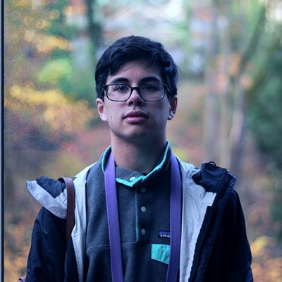

Harrison Kwik
Seattle, WA — kwikh [at] uw [dot] edu — github.com/RESPRiT
Last updated October, 2018
Education
University of Washington,Seattle, WAJune 2018
Bachelor of Science,Computer ScienceGPA: 3.75
- Upper-division coursework: Advance Human-Computer Interaction (Capstone), Introduction to Human-Computer Interaction, Data Visualization, Introduction to Compiler Construction, Introduction to Artificial Intelligence, Data Structures and Parallelism, Software Design and Implementation, Programming Languages, Discrete Mathematics, Probability and Statistics, The Hardware and Software Interface, Computer Security, Systems Programming
Work Experience
Allen Institute for Artificial Intelligence,Software Engineer InternOct 2018 - Present
- Working in a full-stack development environment on the Semantic Scholar team
Versive,Software Engineer InternJune 2018 - Sept 2018
- Worked in a full-stack development environment on the online team
- Developed front-end components for consumer-facing interfaces, and built API features for new customer interactions
- Integrated documentation generation into the build process
Code and Cognition Lab,Undergraduate ResearcherSept 2016 - Present
- Built intelligent computer science tutoring systems using modern web technologies
- Independently conducted research on CS transfer student experiences, resulting in a first-author publication
CSE Department,Teaching AssistantMar 2017 - June 2018
- Developed curriculum and assignments for recently admitted Computer Science and Engineering transfer students
- Taught course material to students, and facilitated assistance for academic and cultural struggles faced by transfer students within CSE
Publications
Experiences of Computer Science Transfer Students
Harrison Kwik, Benjamin Xie, and Andrew J. Ko. (2018)
ACM International Computing Education Research Conference (ICER)A Theory of Instruction for Introductory Programming Skills
Benjamin Xie, Dastyni Loksa, Greg L. Nelson, Matthew J. Davidson, Dongsheng Dong, Harrison Kwik, Alex Hui Tan, Leanne Hwa, Min Li, Andrew J. Ko. (2018, in revision)
Computer Science Education
Projects
koconut,Code and Cognition Lab(Full-stack Web Application)Spring 2017 - Summer 2017
- An intelligent CS1 (introductory computer science) tutor which models and tests student knowledge using Bayesian knowledge tracing and problem assessment
- Designed the project architecture and specification, and created written and generated internal documentation
- Implemented the project frontend, developing the user interface and experience
- Implemented backend models for user knowledge, and server-side code execution and testing to evaluate student responses
- Technologies: JavaScript, React, Flow, Sass, Node.js, Express
TogetherWe,DubHacks 2017(Front-end Web Application)Autumn 2017
- A community crowdsourcing tool with the goal of using technology to enable people to solve human-centered problems using a community task list
- Ideated, designed, spec’d, and implemented the entire project in less than 20 hours (including 6 hours of sleep!)
- Implemented the project user-interface from scratch, using Bootstrap to expedite the creation of common elements
- Implemented data models and state management controllers to enable a live prototype of the application
- Technologies: JavaScript, React, Bootstrap, Sass
DubMaps,DubHacks 2016(Full-stack Web Application)Autumn 2016
- A UW campus map tool that can visualize student populations across campus using heatmaps and charts, and provide building information for a student’s personal class schedule
- Technologies: JavaScript, jQuery, Node.js, Mapbox
toamema(Python Bot)— https://github.com/RESPRiT/toamemaSummer 2016
- A Reddit bot built using the Reddit and Imgur APIs that automates various moderator tasks, and generates and uploads images of messages coded with the Matoran cipher
- Technologies: Python
Skills
- Languages:
- JavaScript,
- Python,
- Java,
- Scala,
- C/C++,
- Ruby,
- Bash,
- HTML/CSS,
- LaTeX
- Tools and Frameworks:
- React,
- Vue,
- Node.js,
- Express,
- Flow,
- TypeScript,
- Sass,
- Django,
- VCS (Git, SVN)
- Misc.:
- User Research,
- Study Design,
- Digital Photography,
- Adobe Photoshop,
- Adobe Animate